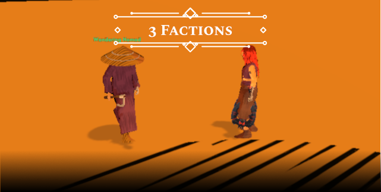
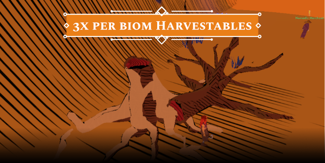
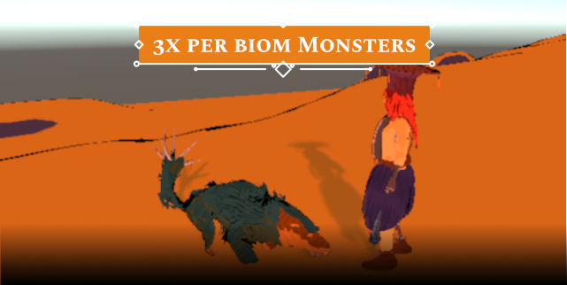
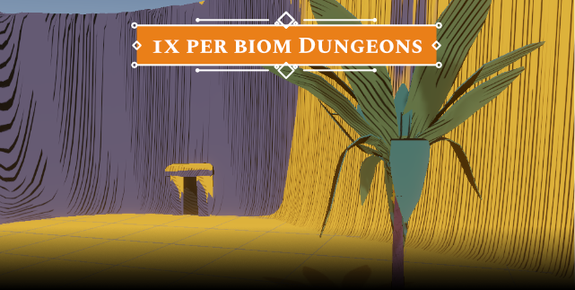
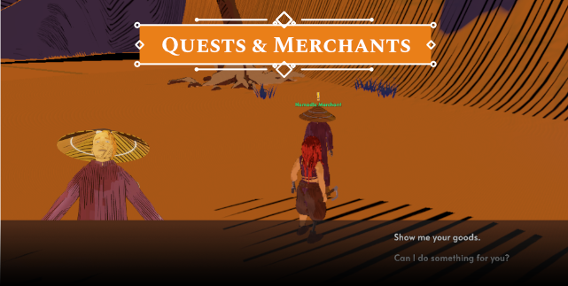
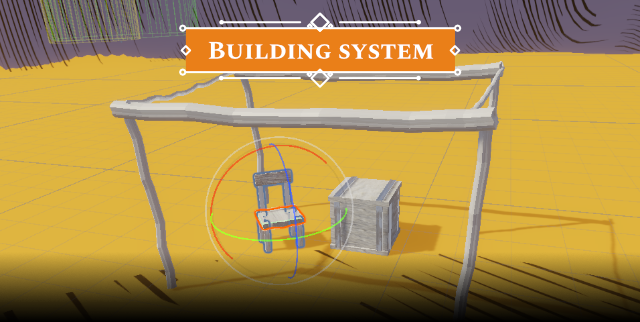
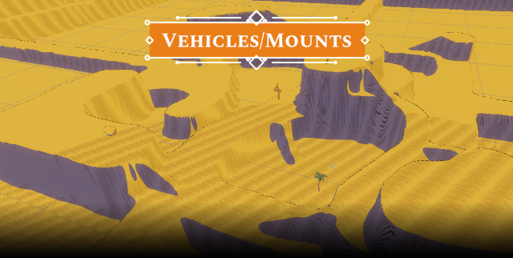
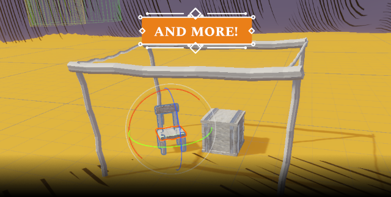

ARCANEPUNK LOST
"Arcanepunk Lost is an arcanepunk (obviously) inspired, indie, solo-developed RPG. It takes place in an alternative, dystopic future. But why is it 'so' alternative? This world ended roughly in the 1900s. This post-Victorian age was well known for its technological progression, weird fashion, colonialism, and much more. However, in our game, the twist arrives when unknown forces destroyed the world. Those who survived formed nations, religions, clans, or simply wandered solo in what's left of the world. Now, imagine what would happen 200 years later. Would the world be any different? Be sure it would be, especially if suspicious forces that cannot be explained by science begin to manifest. Who is to blame for the end of the world? And with whom will you side—technology, magic, or perhaps... both?"

"Desert, greenlands, swamps, and definitely more—each biome will feature unique encounters, weather, art styles, and more. The world is semi-open world. You are free to explore its boundaries and navigate vertical terrains."
"Each biome will have factions that include unique NPCs, faction-specific quests, and perhaps even a faction choice system. (The last part might be added in Q2 of 2023.)"
"Each biome should teem with life, with some of it even being harvestable. Currently, I have several interactable objects like trees and ores, with more on the way. Some of them have a unique physics system implemented, and most importantly, time will not be merciful."
"Monsters and animals will populate the world of Arcanepunk Lost, just like interactables. To start, I will aim to include three unique monsters per biome and may also introduce some friendly animals. The models are custom-made, and the monsters are unique. I plan to create a bestiary for them in the future."
"Dungeons will play a major role in obtaining the most important materials for unique armors and weapons. Some dungeons will be more magically influenced, while others will be purely steampunk. However, similarities can be found in various puzzles and mischief."
"Questing will eventually become the core of the replayable loop. The plan is to create a faction-specific quest system that allows players to choose quests aligned with a particular faction. In the future, I would also like to include world-changing quests that could potentially erase entire factions."
"The soundtrack is not something to be rushed. The entire sound system, and music in particular, is a significant responsibility and not within my skill set. Nevertheless, I am actively trying to connect with some prospective sound artists, and we are currently working on our first tracks."
"The building system has always had a significant impact on all kinds of RPGs. I can imagine players being able to choose the best-looking locations and building their dream factories, player homes, or even some witch dens. All of these features are in the distant future, and in Q3 of 2023, we hope to release a playable building demo (to be decided)."
"The world is huge and consists of chunks. The map is designed to be vertical. In some cases, players will need to travel across several floors to reach certain NPCs, quests, harvestables, or puzzles. Mounts or primitive steampunk vehicles might come in handy."
"There is obviously a ton of work to be done... Nevertheless, I will work on the project solo since this is my dream game. Things might get delayed, and some mechanics might even get canceled, but the development will go on. The primary items on the to-do list will be optimization and localization."
Q&A
1) What will make the game unique?
"The game is my personal project, and I am heavily inspired by my favorite RPGs such as Kenshi, Outward, Arcanum of Steamworks and Magick Obscura, and more. I aim to create a world filled with lore and a great community, with the potential for a huge modding community in the future. It doesn't have to be unique; it has to be fun."
2) What will make the game re-playable?
"The faction system, random item stats, and perhaps even random enemies (in the future, not in the early development stages). I am even considering options like permadeath or other more interesting approaches. One of my dreams is also to implement randomly generated dungeons."
3) Will the game be free?
"It is yet to be decided. However, I am considering a smaller one-time purchase option via Steam after the final release."
4) What engine do you use to develop the game?
"I am using Unity 2021 LTS version. Additionally, a significant part of my development relies on assets like RPG Builder from Blink Studio. I am a graphic and UI designer, and my coding experience is not extensive. I hope you are not judgmental about the use of assets. All the art, such as shaders and 3D models, is my work, and I will also be implementing my own mechanics."
5) Can we play the game now?
"No, there will be scheduled time periods when the releases will be available for free testing. For more information, please join the Discord community. The final release will be announced in the future, and the Steam page or Itch page will be created."
6) Can we help you?
"I am not actively looking for a crew right now, nor am I seeking a publisher. However, if you are interested, please write me an email via the contacts on this website. As I mentioned, my programming skills are not very strong, and sound work is also a challenge for me."
7) Where can we learn more about the game?
"There are blog posts with the tag 'arcanepunk' on the website. You can also follow my Discord for a more personal approach."